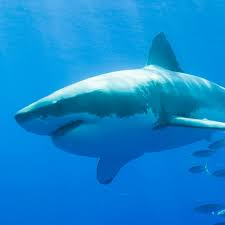

There are more than 465 known species of sharks living in our oceans today. Sharks are an apex predator at or near the top of their marine food chains, and they regulate the populations of species below them. Research has shown that massive depletion of sharks has cascading effects throughout the ocean’s ecosystems.Sharks belong to a family of fish that have skeletons made of cartilage, a tissue more flexible and lighter than bone. They breathe through a series of five to seven gill slits located on either side of their bodies. All sharks have multiple rows of teeth, and while they lose teeth on a regular basis, new teeth continue to grow in and replace those they lose.
